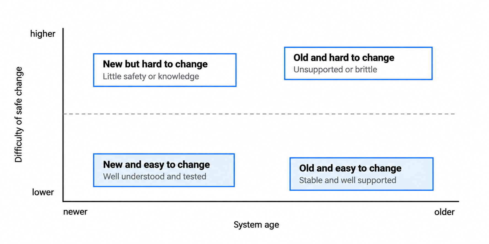
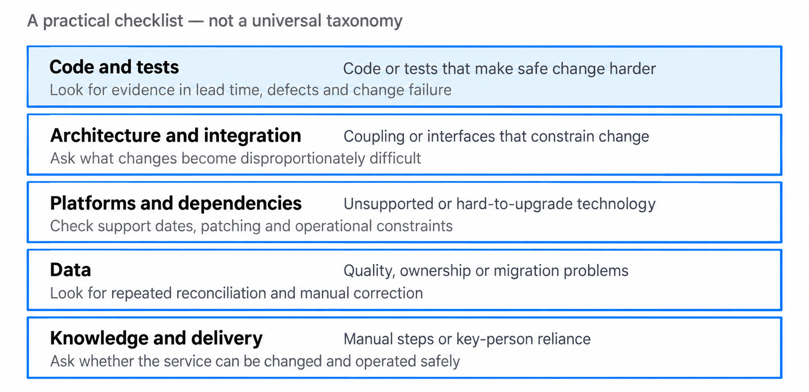
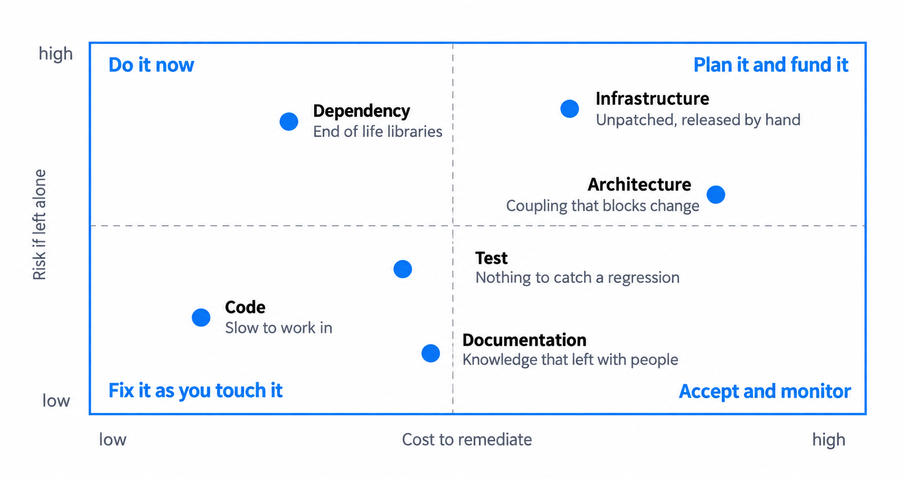
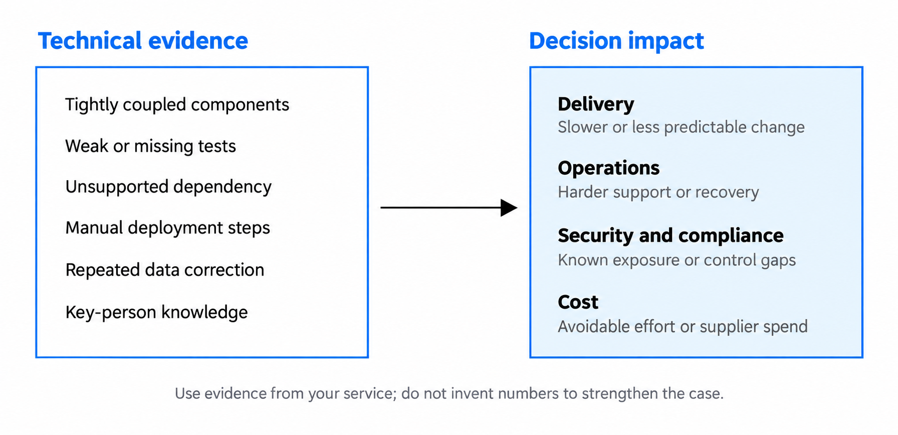
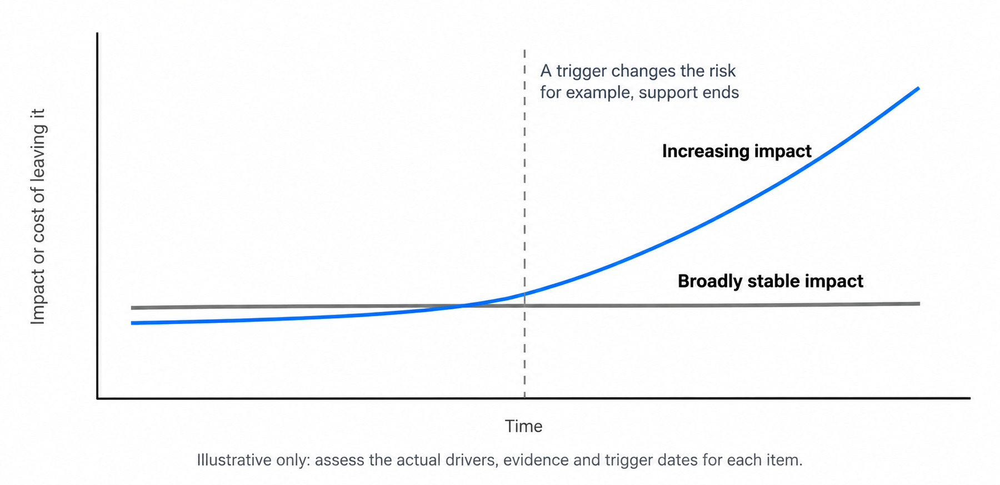
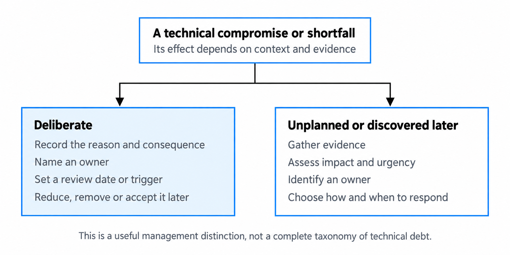

Managing technical debt
Spot technical debt, judge when it matters and decide what to do about it.
You'll come away with:
- A practical way to distinguish technical debt from old technology or personal preference
- Ways to find and assess debt across a service
- A simple approach to recording and prioritising debt
- How to explain the impact in terms decision makers can act on
What technical debt means
Technical debt is a metaphor for technical choices or conditions that make future change or operation harder than it needs to be. Ward Cunningham introduced the debt metaphor in his 1992 WyCash experience report. The useful idea is the cost that follows a shortcut or incomplete design: you may gain something now, but later work can become harder until the underlying problem is addressed.
There is no single test that identifies every form of technical debt. For architecture work, use the term when you can point to a technical condition, show the consequence it creates and explain why that consequence matters.

An old system is not automatically debt. Government guidance defines legacy technology using factors such as supplier support, ability to update, cost-effectiveness and risk, rather than age alone. A stable older service may be easier to support than a new service that is poorly understood or difficult to change. GOV.UK guidance on managing legacy technology makes the same distinction by focusing on the condition and risk of the technology.
Preference is not debt either. Disliking a framework, coding style or supplier is not enough. Look for evidence: repeated failures, slow or risky changes, unsupported components, manual workarounds, avoidable support effort or constraints that block a needed outcome.
Where technical debt can appear
Technical debt is wider than untidy code. It can sit anywhere that makes a service harder to change, operate or support. The areas below are a useful checklist rather than a fixed taxonomy.

Code and test debt can make a change slower or less predictable because behaviour is difficult to understand or verify. Architecture and integration debt appears when coupling, brittle interfaces or earlier structural decisions make a needed change disproportionately difficult.
Platform and dependency debt includes technology that is difficult to patch or upgrade, especially when supplier support is ending. The NCSC warns that weaknesses found in unsupported products can remain unpatched, so continued use requires an explicit risk decision and mitigation. NCSC guidance on obsolete products recommends moving away from obsolete systems in the longer term.
Debt can also sit in data, knowledge and delivery processes. Examples include repeated manual data correction, undocumented recovery steps, releases that rely on one person, or a migration that cannot be repeated safely. These are worth recording when they create a real cost, risk or constraint.
Assess the impact before you prioritise it
Finding debt does not tell you what to fix first. Assess the consequence of leaving it, the urgency of that consequence and the effort or disruption involved in changing it.

A small change that removes a material security or reliability risk may deserve immediate attention. A large structural change with the same level of risk may need options, funding and a staged plan. Low-impact debt may be accepted for now, particularly where a service is stable or approaching retirement.
Do not turn the matrix into a scoring exercise that creates false precision. Record the evidence behind the judgement: support dates, incident history, delivery data, known vulnerabilities, supplier constraints, operational effort or a specific capability that the current design cannot support.
Make the impact clear
Decision makers do not need a lecture on coupling or test coverage. They need to understand what the technical condition means for the service and what choices are available.

For example, instead of saying “the integration layer is tightly coupled”, explain that changing one interface requires coordinated releases across four systems and has delayed the last three changes. Instead of saying “the runtime is old”, state its support end date, what security updates will stop and what mitigations are available.
Use numbers only when you can show where they came from. Delivery lead time, incident records, support costs and supplier dates are stronger than invented savings or speculative failure costs.
Keep a lightweight debt register
A debt register can make important items visible, but it only helps if somebody uses it to make decisions. Ownership does not have to sit with an architecture team: assign each item to the person or team able to manage the consequence and route decisions through the governance that applies to the service.
For each material item, record:
- the technical condition and the evidence for it
- the consequence of leaving it
- the affected service, component or outcome
- the owner and any important dependency or deadline
- the realistic options, including acceptance where appropriate
- an indicative effort or cost where it is known
- the decision, review date or trigger for reconsidering it
Do not fill the register with every code smell or improvement idea. Keep items that need visibility beyond normal delivery work. Minor maintainability work can stay in the team backlog if that is where it will actually be managed.
Some debt can wait; some gets worse
The financial metaphor is useful, but technical debt does not have a literal interest rate. Some items remain broadly stable for a long time. Others become harder or riskier because their circumstances change.

A stable module that rarely changes may be reasonable to leave alone. An unsupported dependency, growing operational workload or architecture that blocks a committed service change may become more urgent. The important question is not “how old is this debt?” but “what happens if we leave it, and what would make that answer change?”
Deliberate and unplanned debt
It is useful to distinguish between a compromise taken deliberately and a problem discovered later. This is a management aid, not a complete classification of technical debt.

A deliberate compromise may be sensible when it protects a more important outcome. For example, a team might choose a simpler implementation for an early release while uncertainty is high. Record why that choice was made, what consequence it creates and what would cause the team to revisit it. An architecture decision record can be appropriate when the compromise is part of an architecture decision.
Unplanned debt needs the same assessment once it is found. Do not assume it must be removed immediately. Establish the impact, identify an owner and decide whether to reduce it, remove it, contain it or accept it for a defined period.
Decide what to do
There is no universal percentage of delivery capacity that should be reserved for technical debt. The right response depends on the service, the evidence and the competing priorities.
Your options usually include improving the problem as part of planned change, funding focused remediation, containing the risk, replacing the affected technology, retiring it, or accepting it with a review trigger. Government guidance explicitly recognises that legacy technology may be retained, retired, re-hosted, repurchased or re-platformed depending on the organisation and the problem. Managing legacy technology also recommends continuous improvement to reduce future legacy risk.
When significant spending is required, present the case as a choice rather than a request to “pay down debt”. The HM Treasury Green Book requires appraisal to compare options using evidence about objectives, costs, benefits, risks and uncertainty. That means showing what happens under business as usual as well as what the remediation options would achieve.
Government services have specific legacy obligations
For relevant government digital products and services, technical debt is not only an internal engineering concern. Current cross-government guidance says teams must have a legacy-proofing plan to prevent the build-up of technical debt and future legacy. It also requires associated legacy technology to be assessed through the Legacy IT Risk Assessment Framework. GOV.UK guidance on preventing technical debt and legacy sets out the scope and the responsibilities involved.
The Service Standard guidance for choosing technology also expects service teams to understand total cost of ownership, preserve the ability to make different choices and manage legacy technology that the service depends on.
What to remember
- Technical debt is about the consequence of a technical condition, not simply the age of the technology.
- Find the evidence before asking for remediation.
- Prioritise by impact, urgency and the realistic cost or disruption of action.
- Record material debt with an owner and a review trigger.
- Accepting debt can be a valid decision when the consequence is understood and owned.
This guide describes practical technical-debt considerations for Solution Architects working around UK government services. The categories, matrices and questions are teaching aids rather than a complete classification, scoring method or mandatory process.
Last reviewed September 2026 against the government, NCSC and original source below. Guidance changes, so check the source before relying on it.